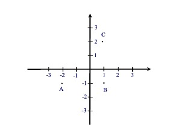
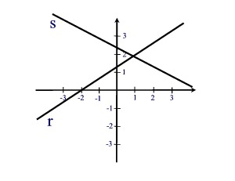
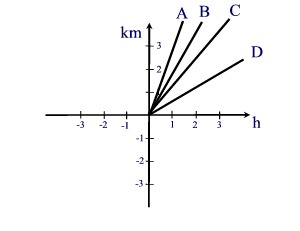
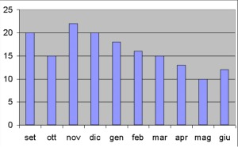
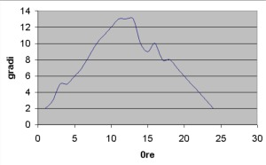
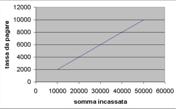
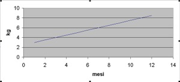
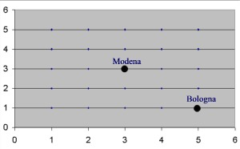

|
1) I punti A(-2,-1),
B(1,-1), C(1,2) sono i vertici di un quadrato. Quali sono le coordinate
del quarto vertice?
 |
| D(-2,1) |
| D(-2,2) |
| D(-1,1) |
| D(-1,2) |
| 2) Qual è il perimetro del quadrato
precedente? |
| -16 |
| 9 |
| 16 |
| 12 |
|
3) Quali sono le
coordinate del punto di intersezione delle due rette rappresentate in
figura?
 |
| A(1,2) |
| A(2,1) |
| A(1,1) |
| A(2,2) |
|
4) Quali
delle rette del disegno precedente passa per il punto
(-2,0) |
| tutte e due |
| r |
| s |
| nessuna |
|
5)Tre amici A, B, C, D
fanno una gara in bicicletta su un percorso di 3km. Nel grafico sono
riportate le rette che rappresentano la distanza percorsa in km per ora di
ciascuno. Chi vince la gara?
 |
| A |
| B |
| C |
| D |
|
6) Nel seguente grafico
sono riportati il numero di alunni insufficienti durante l'anno
scolastico. Cosa si può dedurre dal grafico?
 |
| Il
mese in cui la classe è andata meglio è stato novembre |
| La
classe è andata meglio nel secondo quadrimestre rispetto al
primo |
| La
classe è andata meglio nell'ultimo mese di scuola |
| Nel mese di ottobre ci sono state più insufficienze che
sufficienze |
|
7) Il seguente grafico
rappresenta l'andamento della temperatura durante il giorno. In quale
fascia oraria è avvenuta la maggiore variazione di temperatura?
 |
| Tra le 0 e le 5 |
| Tra le 5 e le 10 |
| Tra le 10 e le 15 |
| Tra le 20 e le 25 |
|
8) Per ogni somma incassata
bisogna pagare una tassa. Osservando il grafico, la tassa da pagare è
del
 |
| 10% |
| 15% |
| 20% |
| 25% |
|
9) Il seguente grafico
rappresenta l'andamento del peso del piccolo Luigi. Quanto pesava Luigi a
7 mesi?
 |
| 7
kg |
| 6
kg |
| 5
kg |
| 4
kg |
|
10) Nella seguente carta
stradale quali sono le coordinate di Modena e Bologna?
 |
| M(3,3) B(5,5) |
| M(3,1) B(5,1) |
| M(3,3) B(5,1) |
| M(3,3) B(1,5) |